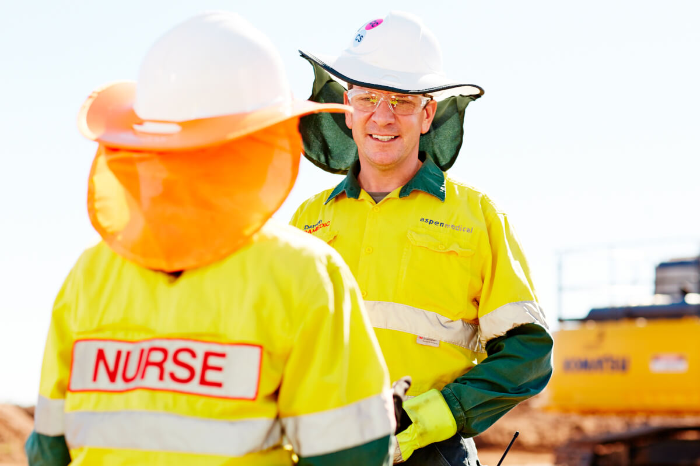

More than a career in healthcare
Making the world healthier, safer and better begins with you. At Aspen Medical, we provide a safe and supportive working environment, a commitment to your personal development and flexible contracts to suit the way you want to work. In return, we seek change-makers who want to work in a better kind of healthcare system.
JOIN OUR TALENT COMMUNITY